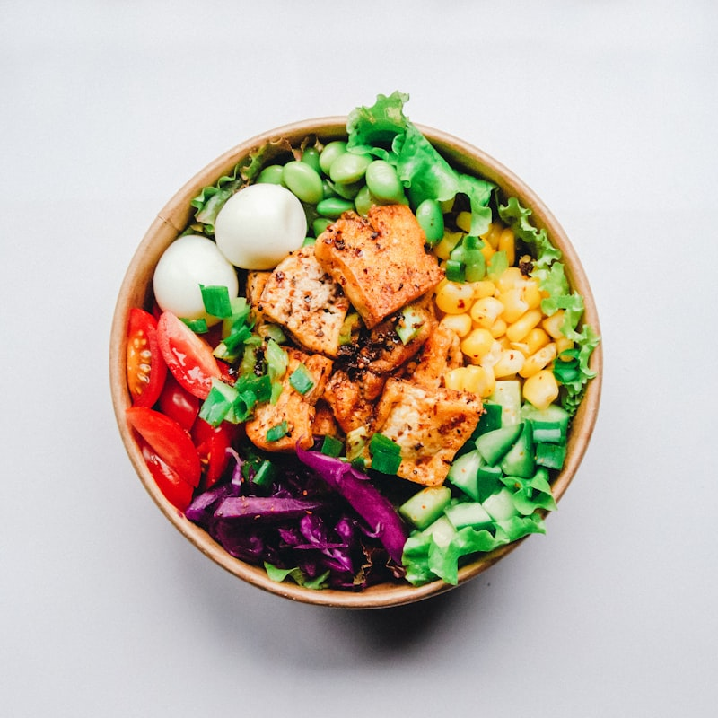

Exploring Jakarta Heritage & Modern Web Tech
Welcome to the personal digital showcase of Muhammad Rayza Buftiem (NRP: 5025251262), undergraduate student of Informatics at Institut Teknologi Sepuluh Nopember (ITS). Discover my background, my hometown roots in Jakarta, traditional Betawi cuisine, and iconic cultural landmarks.

Muhammad Rayza Buftiem
NRP: 5025251262 • Class D WebPro
Explore The Core Chapters
Navigate through all five dedicated sections built with clean semantic HTML, modular CSS, and interactive JavaScript according to the project specifications.
About Me
Student Profile & Technical Skillset
Biography • Education • Tech Stack • Leadership
Get to know Muhammad Rayza Buftiem, an ambitious Informatics student at ITS with experience in organizational leadership, fullstack web development, and algorithmic problem solving.
Hometown Story: Jakarta Metropolis
History • Betawi Traditions • Modern Urban Marvels
A comprehensive portrait of Indonesia's iconic capital city Jakarta: from ancient Sunda Kelapa and colonial Batavia to today's vibrant megacity, celebrating rich Betawi art and culture.

CulinaryAuthentic Betawi Local Delicacies
Soto Betawi • Kerak Telor • Asinan • Bir Pletok
Immerse in the culinary mastery of Jakarta. Discover secret recipes, flavor profiles, and heritage traditions of dishes that have delighted generations for hundreds of years.
 Tourism
Tourism
Top Tourist Attractions & Landmarks
Monas • Kota Tua • TMII • Ancol • Istiqlal
A curated travel guide covering Jakarta's most famous historic sites, cultural repositories, waterfront amusement parks, and monuments of tolerance and unity.
Assignment Deliverables • EF234301 WebPro
Built strictly adhering to all guidelines outlined in the Quiz 1 specification sheet.
Clean routing format strictly implemented:
/quiz1 - Homepage
/quiz1/profile - Profile Page
/quiz1/hometown - Hometown Page
/quiz1/food - Local Food Page
/quiz1/tourist - Tourist Places Page
Crafted with responsive semantic HTML5, custom vanilla CSS design tokens, dynamic dark/light mode toggling, interactive modal overlays, and client-side filtering algorithms.
Accompanied by comprehensive Report.PDF (design analysis, code review, evaluation),
signed Declaration.PDF, and public GitHub repository deployment.